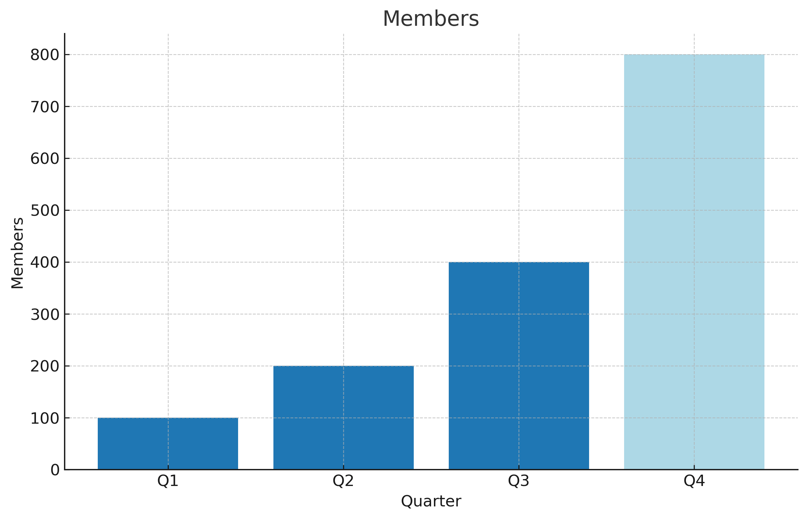

Kickoff
Augmented Software Engineering Meetup
20-Nov-2025
roland@tritsch.email
Welcome

Welcome

Welcome

Roland

Roland
- (Fractional) CTO, VP Engineering, …
- Specialized in early (remote-first) start-ups
- The Extreme Digital Nomad, The Augmented Software Engineer
- Ex-IONA, Ex-Gilt, Ex-Nitro, Ex-Community, …
- SaaS, Distributed-Systems, Event-based Systems, …
- Functional Programing (Haskell, Scala, Elixir/Erlang, …)
The Extreme Digital Nomad

Thank you!

Why?
- Balance the fear and the hype!
- AI will replace all software-engineers: Probably not!
- AI has the potential to make you a better (more productive, more efficient, more effective) software-engineer: Very likely!
- By how much? I don't know! But more than 0%!
- And yes: We can learn this on our own, at home, watching YouTube, …
- But it will be faster (more fun :)), if we learn together/from each other
- Let's have some fun, shall we?
What? How?
- Cadence: Every 2 month
- Next one in January. Agentic-Coding (Take III)
- Call-for-Sponsors (!!!)
- Call-for-Papers/Presentations (!!!)
- What is working? How? Why? Not working?
- Tools, Products, Platforms, Frameworks, …
- Experiences and Best Practices
- Tips and Tricks
- Call-for-Coorganizer(s)
Logistics
- Fire exit, restroom, no phones, no food (but drinks :)) …
- Slides will be available for download (and (maybe) a video)
- !!! Engagement !!!
- Survey (Using AI? How? How much?)
Agenda/Today
- 18:00 - Opening doors (Pizza & Beers) - All
- 18:30 - Kickoff - Eamon, Roland
- 18:35 - A word from the sponsor: Agentic-Coding with Jentic - Liam
- 18:45 - Practical Agentic-Coding: A journey of 12000 steps - Karl
- 19:30 - From Friction to Flow: Harnessing AI-Assisted Development - Dáire
- 20:15 - Wrap-up - Roland
- 20:20 - More beers, more mingling - All
Questions (so far)?